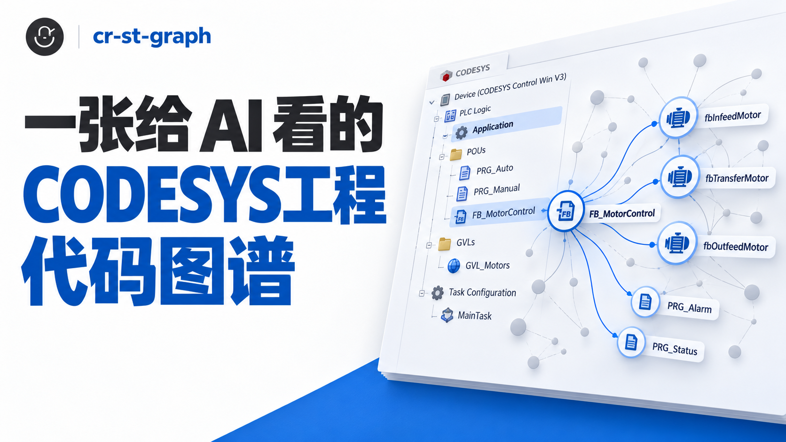
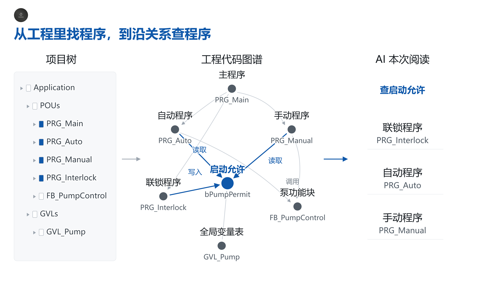
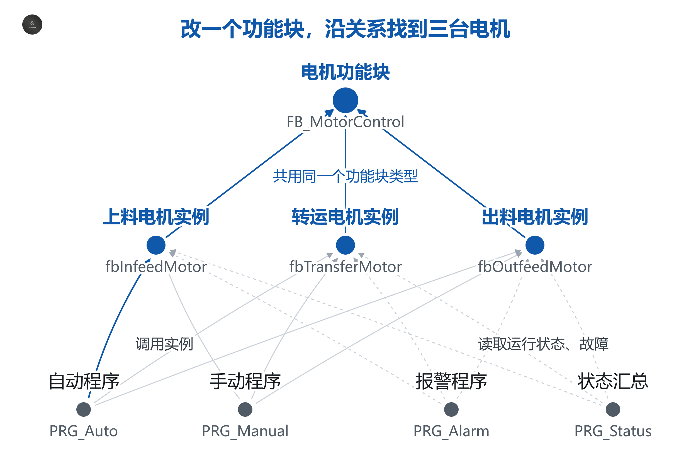
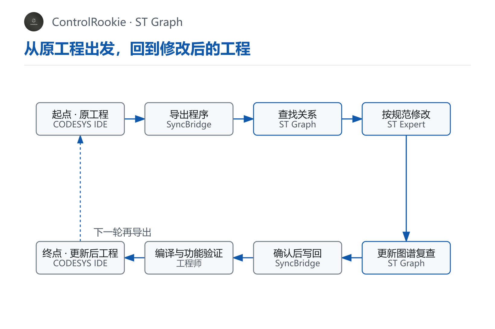

做 cr-st-graph 的启发，来自 CodeGraph 这类开源代码图谱项目。我必须承认，最早我完全是被Graphify、CodeGraph这类工具超高的星标数先吸引，进而才关注了解，关注让我产生了一个问题：
AI 写 Python、Java、C++ 已经很厉害了，为什么大家还需要这些帮助 AI 理解代码的工具？

AI 会写代码，为什么还需要 CodeGraph？
让 AI 写一个函数，或者修改一段已经给出的代码，它可以直接开始分析。可面对一个具体项目，它还要先找到相关文件、查清调用、认准变量，再判断修改会影响哪里。
这些信息本来就在代码里，但分散在不同文件中。AI 需要搜索、打开、追踪，才能把它们串起来。今天修改一个功能，明天调整另一段逻辑，相同的程序关系还可能再查一次。
一个工程师会写程序，接手陌生工程时也要翻项目、查变量、追调用。AI 同样需要先把这个工程摸清楚。
CodeGraph 的方法，可以用四个动作说明：
- 认对象。 读源码，找出函数、方法、类型等对象，以及它们的位置。
- 查联系。 整理谁调用谁、谁依赖什么，把跨文件的联系连起来。
- 留下来。 将这些关系存成本地可查询的图谱，下一次继续用。
- 跟着改。 源码变化以后更新图谱，让后续查询对应当前代码。
AI 再遇到任务，可以先问：“谁调用这个方法？”“改这个对象要检查哪些地方？”工具把相关对象和位置找出来，AI 再阅读需要的代码。
CodeGraph 把散落在文件里的联系提前整理好。下一次修改，AI 先查路，再看程序，少做重复查找。
把这些关系画出来，对象是一个个点，调用和依赖是连接它们的线。但 AI 实际使用的是查询结果、对象名和源码位置，具体控制逻辑仍然要看代码。
代码告诉 AI“这一段怎样工作”；图谱先告诉 AI“该看哪几段，它们怎样联系”。
这套方法，不正适合 CODESYS 工程吗？
研究到这里，我突然想到：这套思维和方法，不正适合 CODESYS 的 ST 工程吗？
我们在 IDE 里习惯从项目树打开主程序、功能块、方法和全局变量表。可是准备修改一台泵的启动条件时，问题会超出项目树：哪个程序调用泵功能块？实例属于哪种类型？启动允许在哪里写入？自动和手动是不是都在读取它？
项目树把对象放得整齐，这些横跨不同程序的联系，还要进入代码继续查。
项目树方便我们找到程序放在哪里；代码图谱进一步串起谁调用它、谁使用它、哪些地方读写同一个变量。

读图重点： 从左边的工程对象进入中间的关系网。需要修改启动允许时，沿写入和读取关系找到联锁、自动、手动程序，右边就得到这次应当阅读和复查的对象。工程里其他程序仍在图谱中，可以按任务继续查。
就像电气图把端子和接线标清楚，代码图谱把程序和变量的联系标清楚。你不会因为会接线，就省掉查电气图；同样，AI 会写 ST，也值得有一张能查工程关系的图。
因此，我做了 ST Graph
我基于 CodeGraph 做二次开发，沿用源码解析、对象索引、关系查询、本地保存和同步这些核心机制，再围绕 CODESYS ST 补充专门规则。
CODESYS 的程序、功能块实例、方法、属性、枚举、继承和全局变量访问都有自己的写法。同名方法到底属于哪个功能块，一个实例实际调用什么对象，变量是读取还是写入，需要结合声明和所属范围来判断。
这些关系整理好以后，就是 st-graph——一张给 AI 看的《CODESYS工程代码图谱》。
它帮助 AI 在修改之前找到相关程序，在修改之后复查关联；图谱保存在本机，后续任务更新后继续使用。
上一篇的 cr-st-expert，是一本给 AI 看的《企业级 ST 标准化编程规范手册》。两者的分工很清楚：ST Expert 告诉 AI 怎样按规范写，ST Graph 帮它找到这次该看、该改、该检查的程序。
用 AI 改程序，ST Graph 能帮什么忙？
改一处，先把相关程序找齐
你要改泵的启动条件，AI 先查调用方、实例类型和变量读写，再阅读相关源码。需要检查自动步序还是手动操作，可以沿关系继续找。
先找齐这台设备相关的程序，再动手改，少在工程里来回翻。
同名方法很多，先认清是哪一个
几个功能块里都可能有 M_Update。仅搜名字，容易把不同设备的程序混在一起。图谱结合实例声明和所属功能块查关系，帮助 AI 定位实际调用；不能确认的关系会留下待核对项。
先确认是哪台设备、哪个实例、哪个方法，再分析逻辑。
一个工程反复改，已有关系接着用
今天改报警，明天调步序，后天加手动功能，已经整理好的关系可以继续查询。新任务开始前先更新图谱，再查本次涉及的程序。
把查清工程的成果留下来，下一轮接着用，少做重复准备。
改完以后，沿关系再查一遍
方法改名，要查调用方；全局变量变更，要查读写位置。修改后更新图谱，核对相关程序有没有一起调整，再完成相应验证。
改当前程序，也要检查使用它的程序；关系能回到源码核对，审查才有依据。
改一个电机功能块，哪些地方要一起检查？
假设一套输送设备有三台电机：上料、转运、出料。它们各有自己的实例，但共用同一个 FB_MotorControl 功能块。
现在要让 AI 完成一个修改：把原来统一的启动超时时间，改成每台电机可以单独设置。
修改功能块本身并不难。真正需要查清的是：这个功能块用在了哪些地方？每台电机在哪里调用？参数要在哪里设置？改完以后还要检查哪些程序？
先查关系，把相关程序找齐
ST Graph 帮助 AI 顺着工程关系找到：
- 三台电机分别使用哪个实例。
- 自动、手动程序在哪里调用这些实例。
- 哪些程序读取它们的运行状态和故障信息。

读图重点： 从 FB_MotorControl 找到上料、转运、出料三个实例，再沿关系查自动、手动的调用位置，以及报警、状态汇总的读取位置。三台电机的参数要分别落实，使用输出的程序也要一起核对。
先查清“谁在使用它”，再决定修改和检查范围。
再改代码，把参数落实到每台电机
AI 阅读这些相关代码，给功能块增加超时设置参数，再核对三台电机的调用位置，让各自的设置传进去。
报警和状态汇总程序也需要检查，但不一定需要修改。如果功能块的输出没有改变，就核对原来的使用方式是否仍然成立。
图谱帮助找齐关联，AI 结合代码判断：哪里要改，哪里只需检查。
后续修改，已有关系继续用
这次改超时设置，下一次完善故障复位，再下一次调整报警信息，仍然是同一个工程、同一组电机。
每轮修改前更新图谱，AI 就能沿已有关系查找本次相关程序；修改后，再沿这些关系复查。
ST Graph 的价值，是让 AI 少花时间摸工程，少读无关代码，少遗漏相关程序。工程持续完善，已经查清的关系也能持续复用。
用起来以后，工程师能省下什么？
少花 token，少让 AI 重读无关程序
token 是模型处理文字和代码的计量单位。每次把大段无关程序交给 AI，同样会占用阅读额度。先用图谱找相关对象，再读必要源码，可以减少不相关内容进入对话，也减少反复查找和解释。
建图和更新在本机执行，不调用大模型。跨文件关系变化时，工具可能重新解析较大范围的 ST；这些本地处理不等于再次把整个工程发给 AI。
让 AI 少读无关程序，把使用额度留给这次真正要改的逻辑。
少等它翻工程，更快开始讨论控制逻辑
调用方、变量来源和功能块类型有了查询入口，AI 就有阅读顺序。工程师可以少重复解释“方法在那个功能块里”“变量还有另一处在写”，更早进入启动条件、状态转换和报警处理的讨论。
少替 AI 指路，少等它重新找程序，尽快处理实际问题。
少漏关联程序，改动和交接都更好核对
查调用，能找到使用当前对象的程序；查变量读写，能找到输入来源和写入位置。审核 AI 的改动、接手旧工程时，都可以从这些联系开始，再结合业务资料看具体逻辑。
改动有检查范围，交接有追查线索，判断能落回源码。
同一个工程，下一次还能继续用
图谱保存在本机，源码解析和查询无需联网。它可以供后续对话继续使用，前提是代码修改后及时更新，AI 也实际调用了工具。
长期完善一个工程，就把已有关系接着用，不让每次修改都从翻文件开始。
较大工程、多轮局部修改，更适合发挥关系复用的作用。小工程、一次性任务，建图准备也需要时间。当前尚无同工程、同任务、同模型的端到端对照，所以不写固定的 token 节省比例或速度倍数。
怎么用？先让 AI 真正建图，再开始修改
cr-st-graph 包括工具程序和技能说明。当前 Windows x64 完整包带运行所需文件，交给支持本地工具调用的 AI 助手，按包内说明安装并运行自检。只有说明文件，工具还没有安装。
先确认 AI 执行了建图和查询，再让它开始改程序。
第一次使用，可以这样说：
请用 cr-st-graph 为我指定的 CODESYS ST 源码建立图谱。查清主要程序、功能块调用和全局变量读写，检查解析问题及未确认的引用。先介绍工程关系，暂时不要修改代码。
后续修改，可以这样说：
请先更新 cr-st-graph，查清【泵启动条件】涉及的程序、调用和变量，再读取相关代码。按 ST Expert 规范完成【具体修改】，保留【需要保留的功能】。修改后更新图谱，复查相关程序，并说明验证结果和待确认项。
把“先查关系、再改代码、改后复查”固定下来，图谱才能持续起作用。
和 ST Expert、SyncBridge 怎样搭配？
已有 ST 文件，可以直接使用 ST Graph。需要从 CODESYS IDE 导出程序、修改后再写回工程时，三个工具可以连接成下面这条流程。

读图重点： 本轮从 CODESYS IDE 中的原工程出发，经导出、查关系、修改和复查，工程师确认后写回，再完成编译与功能验证，得到修改后的工程。虚线表示下一轮再从这个工程导出，已有图谱更新后继续使用。
| 工具 | 工程师可以怎样理解 |
|---|---|
| SyncBridge | 把 IDE 程序导出供 AI 修改，确认后再写回工程 |
| ST Graph | 查程序之间的关系，帮助找准改动和检查位置 |
| ST Expert | 按统一规范写 ST，让命名、注释和代码组织保持一致 |
SyncBridge 负责程序进出工程，ST Graph 帮忙找路，ST Expert 管好写法，工程师确认改动和实际结果。
三个工具可以独立使用。图谱运行不要求安装 IDE、PLC、仿真器或另外两个工具；需要工程写回和验证时，再使用相应工具与目标环境。
把工程关系留下来，让下一次修改有路可走
CodeGraph 给我的启发，是把代码里可以查清的联系整理好，让后续任务反复使用。我把这个方法用到 CODESYS ST，希望它能帮助工程师持续完善同一个工程。
cr-st-graph 已经开源发布。我希望把它分享给更多自动化工程师，也让实际使用中的问题和改进建议继续完善这张图谱。完整源码、部署说明和使用方法可以在 GitHub 获取：
GitHub 仓库：BenPeng0205/cr-st-graph
可以先选一个熟悉的工程，查一次泵的调用、查一次变量读写，再做一处修改并更新图谱。对照自己熟悉的程序，更容易判断关系是否准确，也能看出 AI 是否少做了重复工作。
一张给 AI 看的《CODESYS工程代码图谱》，最终要帮助工程师少翻程序、少重复解释，让每轮修改都从更清楚的位置开始。
系列导航
上一篇《cr-st-expert：一本给 AI 看的〈企业级 ST 标准化编程规范手册〉》讲怎样写好 ST；这一篇讲怎样查清工程代码关系。配合 SyncBridge，把导出、修改、复查和写回连接起来。
评论区预留
这里先保留评论和回复结构，不接入第三方服务。后续统一决定登录、匿名、审核、反垃圾和静态站兼容策略。